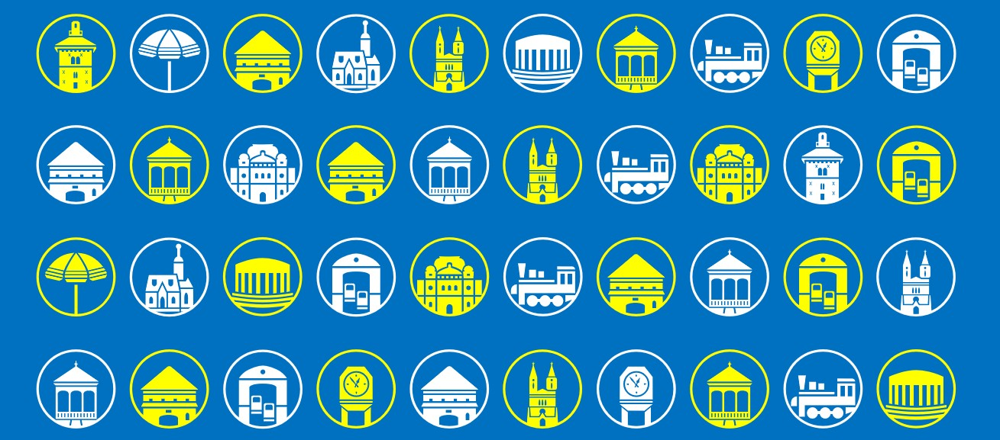
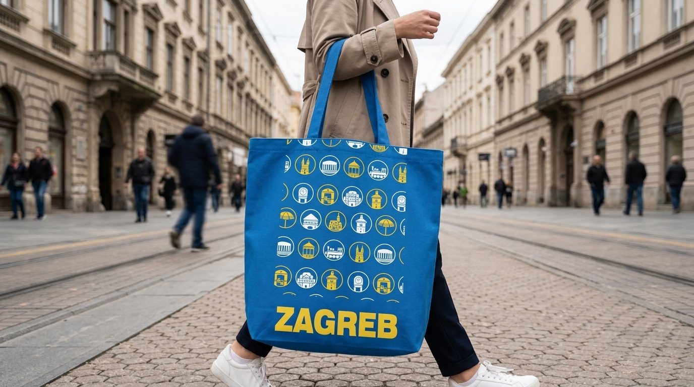
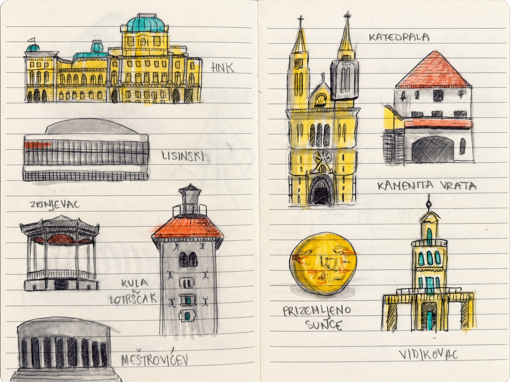
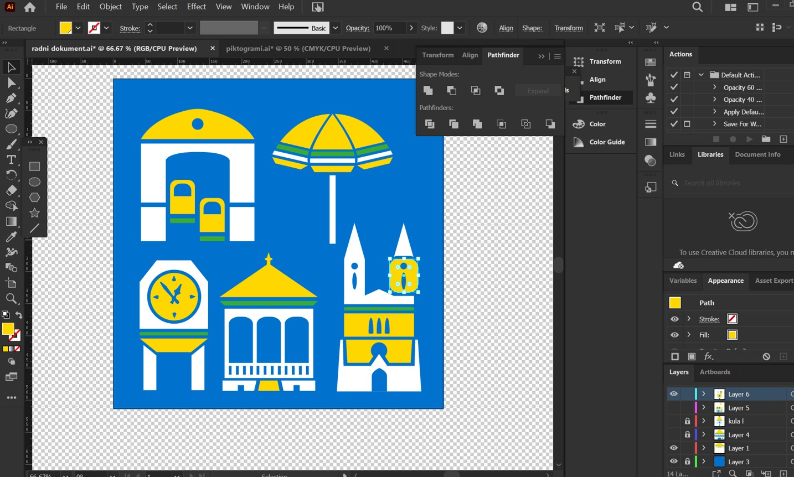
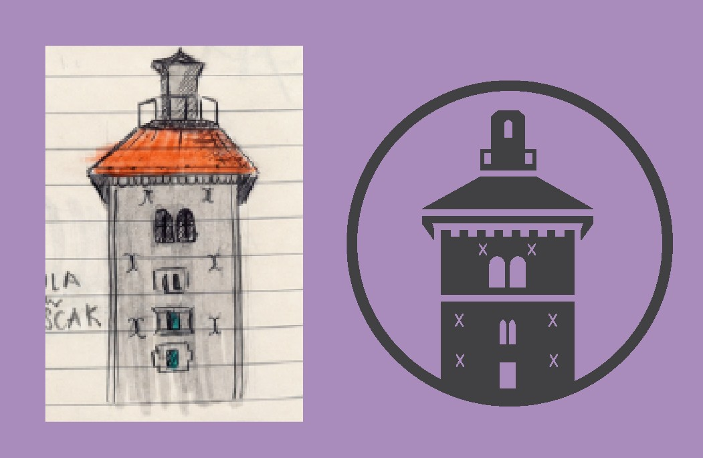
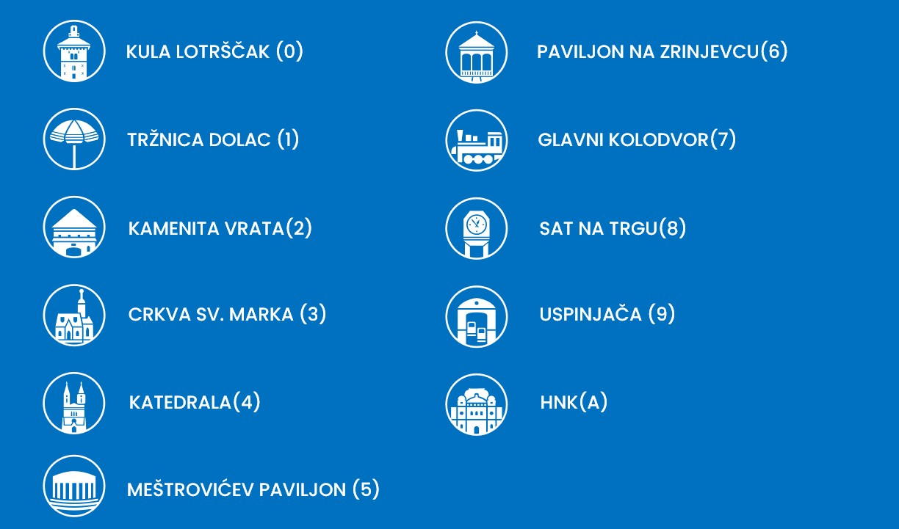
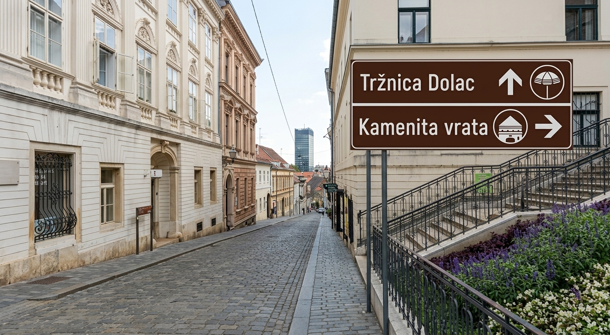
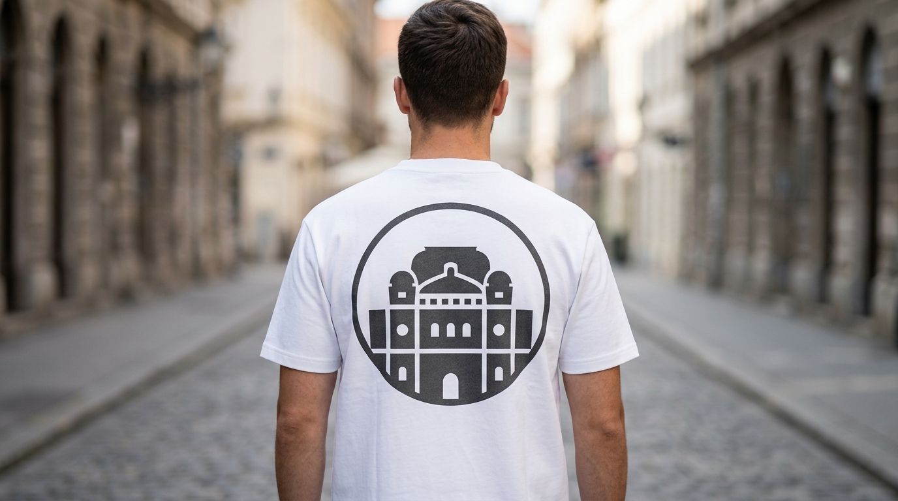

Grad sveden na znakove
Projekt je nastao u sklopu kolegija Tipografija, u kojem je tema bila slobodna. Odabrala sam znamenitosti centra Zagreba jer ih doživljavam kao prepoznatljive točke grada, ali i kao zanimljiv izazov za pojednostavljivanje. Grad često pamtimo kroz konkretne oblike, mjesta susreta i male svakodnevne navike, a piktogrami su mi omogućili da taj identitet prevedem u sustav jasnih vizualnih znakova.

Od prvih skica do odabranih lokacija
Proces je započeo skiciranjem znamenitosti koje su mi prve pale na pamet. Nakon toga sam izabrala jedanaest lokacija i njihove najprepoznatljivije elemente počela razvijati u Illustratoru. Odabir nije zamišljen kao potpuni vodič kroz grad, nego kao osobna selekcija motiva koji zajedno stvaraju prepoznatljivu sliku centra Zagreba.


Tako, primjerice, nisam odabrala prikaz samog Trga bana Jelačića, koji bi se možda intuitivno vezao uz kip bana. Umjesto toga izradila sam piktogram sata na Trgu, oslanjajući se na poznati zagrebački običaj “naći se kod sata”.
Jedinstven sustav
U početnoj fazi piktograme sam gradila geometrijski, prema načinu na koji sama vizualno doživljavam pojedinu znamenitost. Bojom sam najprije odvajala pojedine elemente i istraživala odnose unutar svakog znaka, a za prezentaciju sam odabrala plavu, bijelu, žutu i zelenu paletu koja se referira na boje grada Zagreba.
Kasnije sam odlučila da svi piktogrami dijele isti kružni okvir i vanjski obruč. Krug je postao element koji povezuje cijeli set, bez obzira na to radi li se o građevini, satu, uspinjači ili tržnici.
Pojednostavljivanje prepoznatljivih oblika
Najveći izazov bio je svesti svaku znamenitost na najmanji broj elemenata, a da pritom ostane prepoznatljiva. To je bilo posebno zahtjevno kod Katedrale, Crkve sv. Marka i HNK-a, gdje se mnogo arhitektonskih detalja moralo pretvoriti u jednostavne siluete, otvore, krovove i tornjeve.
Kula Lotrščak dobar je primjer tog procesa: umjesto detaljnog prikaza građevine, zadržala sam njezin karakterističan toranj, krov i osnovni raspored otvora. Na taj način znak ostaje čitljiv i kada se koristi u malom formatu.

Odabrane znamenitosti
Set obuhvaća Kulu Lotrščak, Tržnicu Dolac, Kamenita vrata, Crkvu sv. Marka, Katedralu, Meštrovićev paviljon, Paviljon na Zrinjevcu, Glavni kolodvor, sat na Trgu, uspinjaču i HNK.
Tržnicu Dolac predstavila sam simbolom šestinskog kišobrana, dok sam za Glavni kolodvor odabrala lokomotivu koja je ondje izložena. Kod Katedrale sam na jedan toranj dodala skele, detalj koji se može ukloniti kada više ne bude dio njezina stvarnog izgleda. Drugi toranj pritom ostaje prikazan u zamišljenom, prepoznatljivom obliku.

Mogućnosti primjene
Piktogrami su zamišljeni kao fleksibilan sustav koji se može primijeniti u više konteksta. Mogu funkcionirati na turističkim putokazima, edukacijskim pločama uz znamenitosti, na suvenirima i promotivnim materijalima Zagreba, ali i unutar mobilne aplikacije s kartom gradskih lokacija.
Osim prepoznatljivosti pojedinog mjesta, cilj projekta bio je stvoriti set znakova koji može pomoći u snalaženju gradom, ali i postati zaigran vizualni motiv Zagreba.

